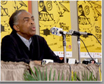

'De agora em diante não serei mais um cavalo de filme de cowboy, mas um cavalinho de vaquejada', afirmou o ministro Gilberto Gil ao receber, ontem à noite, homenagem no encerramento do 16º- Cine Ceará.
O ministro referia-se ao vídeo exibido na cerimônia, com trecho de entrevista realizada pelo Canal Brasil, onde Gil se considerava, dentro do cinema, um entre os vários cavalos de filme de cowboy.
'Hoje me torno um cavalo de vaquejada. O prestígio que o herói do cowboy angariou junto a todos os olhares do mundo vai cada vez mais cedendo lugar aos olhares locais, ao cinema de cada país, de cada povo, de cada conjunto criativo nacional. E é exatamente o caso do Brasil', disse o ministro. 'O cinema brasileiro e as tantas formas de manifestações importantes da nossa vida, da nossa alma, da nossa natureza e do nosso espírito, estão começando a encontrar o seu espaço. Chegou a hora da diversidade cultural', destacou.
O ministro recebeu da prefeita do Ceará, Luizianne Lins, o troféu Eusélio Oliveira, entregue também a grandes nomes do cinema e a personalidades, como o poeta Thiago de Mello, o escritor Ariano Suassuna, o cineasta argentino Fernando Birri e o cineasta e secretário do Audiovisual do MinC, Orlando Senna. Em seguida, também foi homenageado pelo APCNN (Associação de Produtores e Cineastas do Norte e Nordeste). O cineasta baiano e presidente da associação, Jorge Alfredo, entregou ao ministro Gil troféu destacando a sua gestão no Ministério da Cultura e a política de descentralização de recursos em curso.
Mais razões para ficar do que para sair
Um pouco antes da cerimônia, o ministro falou com a imprensa, fez um balanço de sua gestão e da política de regionalização implementada pelo MinC. Questionado sobre a possibilidade de permanecer como ministro da cultura, disse ter mais razões para ficar do que para sair. 'Tenho mais razões para aceitar do que para recusar um eventual convite para continuar como ministro da cultura. Há uma aprovação geral do presidente Lula e, em particular, da área da cultura.
Outra razão que me estimula são os programas e projetos implantados, ou semi-implantados, que precisariam de consolidação. Há propostas que ficaram no papel e precisariam ser objetivadas, como a Loteria da Cultura, por exemplo, que poderia ter maior acolhimento no governo porque o ministério passou no teste, fez o seu dever de casa', disse o ministro. 'Por outro lado, caso eu seja convidado a continuar, há algumas razões para não aceitar, além do cansaço, sinto a necessidade de me dedicar mais intensamente à atividade art ística', completou.